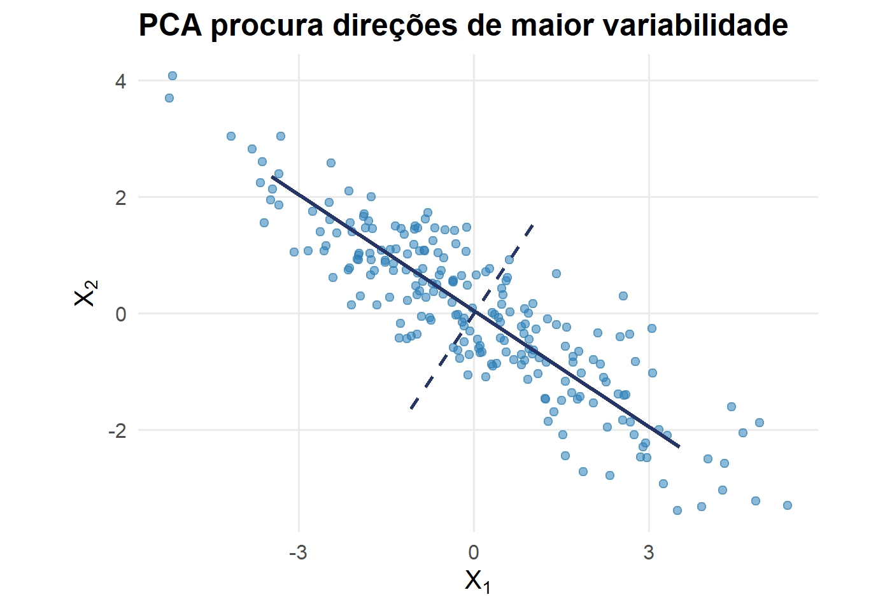

Redução de Dimensionalidade e Mudança de Representação
Até agora, utilizamos uma resposta \(Y\) para orientar o aprendizado
Em aprendizado não supervisionado, observamos apenas
\[ \boxed{ \mathbf X = (\mathbf X_1,\ldots,\mathbf X_p) } \]
e procuramos descobrir estrutura nos próprios dados
Quando \(p\) é grande:
Isso motiva a redução de dimensionalidade
Queremos transformar
\[ \mathbf x\in\mathbb R^p \]
em
\[ \boxed{ \mathbf z = T(\mathbf x) \in\mathbb R^q, \qquad q<p } \]
preservando, tanto quanto possível, a estrutura relevante dos dados
Nesta semana:
\[ \boxed{\text{PCA}} \rightarrow \boxed{\text{Kernel PCA}} \rightarrow \boxed{\text{Projeções Aleatórias}} \rightarrow \boxed{\text{Autoencoders}} \]
PCA será tratada como revisão breve, pois sua fundamentação já foi estudada em Estatística Multivariada
Representações lineares e kernels
Autoencoders
Ao final da semana, devemos ser capazes de:
Na EST014, já estudamos:
Aqui, o objetivo é reinterpretar PCA como um método de representação para Machine Learning
Considere dados centrados
\[ \mathbf x_i\in\mathbb R^p \]
e uma matriz
\[ W_q = [\mathbf w_1,\ldots,\mathbf w_q] \]
formada pelos \(q\) primeiros autovetores da matriz de covariâncias
A nova representação é
\[ \boxed{ \mathbf z_i = W_q^t\mathbf x_i } \]
A primeira direção resolve
\[ \boxed{ \mathbf w_1 = \arg\max_{\|\mathbf w\|=1} \operatorname{Var} (\mathbf w^t\mathbf X) } \]
As demais componentes maximizam variância sob restrições de ortogonalidade

Se mantivermos apenas \(q\) componentes, podemos reconstruir aproximadamente
\[ \boxed{ \widehat{\mathbf x}_i = W_q\mathbf z_i = W_qW_q^t\mathbf x_i } \]
para dados centrados
A informação descartada aparece como erro de reconstrução
PCA procura um subespaço linear
\[ \boxed{ \mathbf z=W^t\mathbf x } \]
Isso funciona muito bem quando a estrutura relevante pode ser representada aproximadamente por uma combinação linear das variáveis
Imagine observações próximas de uma variedade não linear
Uma projeção linear pode:
Precisamos de representações mais flexíveis
Primeiro transformamos implicitamente os dados
\[ \mathbf x \longrightarrow \phi(\mathbf x) \]
para um espaço de características \(\mathcal H\)
Depois realizamos PCA nesse novo espaço
\[ \boxed{ \text{Kernel PCA} = \text{PCA em }\mathcal H } \]
Usamos apenas produtos internos
\[ \boxed{ K(\mathbf x_i,\mathbf x_j) = \left\langle \phi(\mathbf x_i), \phi(\mathbf x_j) \right\rangle } \]
Assim, a transformação \(\phi\) não precisa ser construída explicitamente
Construímos
\[ \boxed{ K_{ij} = K(\mathbf x_i,\mathbf x_j) } \]
resultando em
\[ K\in\mathbb R^{n\times n} \]
Antes da decomposição espectral, a matriz deve ser centrada no espaço de características
Defina
\[ H = I_n-\frac1n\mathbf 1\mathbf 1^t \]
A matriz de kernel centrada é
\[ \boxed{ K_c = HKH } \]
Resolvemos
\[ \boxed{ K_c\boldsymbol\alpha_j = \lambda_j\boldsymbol\alpha_j } \]
Os autovetores da matriz de kernel determinam as direções principais no espaço de características
| Aspecto | PCA | Kernel PCA |
|---|---|---|
| representação | linear | não linear |
| objeto espectral | covariância | matriz de kernel |
| dimensão da matriz principal | \(p\times p\) | \(n\times n\) |
| hiperparâmetros | principalmente \(q\) | kernel, parâmetros e \(q\) |
| interpretação | mais direta | mais difícil |
PCA aprende uma projeção a partir dos dados
Projeções aleatórias escolhem uma transformação aleatória
\[ \boxed{ \mathbf z = A^t\mathbf x } \]
com
\[ A\in\mathbb R^{p\times q} \]
e
\[ q\ll p \]
Para \(0<\varepsilon<1\), queremos aproximadamente
\[ \boxed{ (1-\varepsilon) \|\mathbf x_i-\mathbf x_j\|^2 \leq \|\mathbf z_i-\mathbf z_j\|^2 \leq (1+\varepsilon) \|\mathbf x_i-\mathbf x_j\|^2 } \]
para os pares de observações de interesse
O resultado de Johnson–Lindenstrauss mostra, em essência, que podemos usar uma dimensão da ordem de
\[ \boxed{ q = O\left( \frac{\log n}{\varepsilon^2} \right) } \]
sem depender diretamente da dimensão original \(p\)
Essa é a diferença conceitual fundamental
\[ \boxed{ \text{dados} \rightarrow \text{otimização} \rightarrow W } \]
\[ \boxed{ A\sim\text{distribuição apropriada} } \]
Não há decomposição espectral dos dados para aprender \(A\)
| PCA | Projeção aleatória | |
|---|---|---|
| usa os dados para escolher a projeção | sim | não |
| otimiza variância/reconstrução | sim | não |
| custo de ajuste | maior | muito baixo |
| eixos interpretáveis | relativamente | pouco |
| preservação | variância | distâncias aproximadamente |
Temos três ideias distintas
\[ \boxed{ \text{PCA: aprender uma projeção linear} } \]
\[ \boxed{ \text{Kernel PCA: aprender uma representação não linear via kernel} } \]
\[ \boxed{ \text{RP: projetar aleatoriamente preservando geometria aproximadamente} } \]
Usamos a própria entrada como alvo
\[ \boxed{ \mathbf x \longrightarrow \mathbf z \longrightarrow \widehat{\mathbf x} } \]
A rede deve reconstruir sua entrada passando por uma representação intermediária
\[ \mathbf z \]
\[ \boxed{ \mathbf z = f_{\beta}(\mathbf x) } \]
\[ \boxed{ \widehat{\mathbf x} = g_{\theta}(\mathbf z) } \]
Logo,
\[ \widehat{\mathbf x} = g_{\theta} \left( f_{\beta}(\mathbf x) \right) \]
Se
\[ \mathbf x\in\mathbb R^p \]
e impomos
\[ \boxed{ \mathbf z\in\mathbb R^q, \qquad q<p } \]
a rede precisa comprimir a informação relevante para reconstruir a entrada
Essa camada é chamada de bottleneck
\[ \boxed{ \underbrace{\mathbf x}_{p} \longrightarrow \underbrace{\text{encoder}}_{\text{compressão}} \longrightarrow \underbrace{\mathbf z}_{q} \longrightarrow \underbrace{\text{decoder}}_{\text{reconstrução}} \longrightarrow \underbrace{\widehat{\mathbf x}}_{p} } \]
com
\[ q<p \]
Para covariáveis quantitativas, podemos usar
\[ \boxed{ J(\beta,\theta) = \frac1n \sum_{i=1}^{n} \left\| \mathbf x_i - g_{\theta} \left( f_{\beta}(\mathbf x_i) \right) \right\|^2 } \]
O alvo da rede é a própria observação \(\mathbf x_i\)
O processo continua sendo
\[ \boxed{ \text{forward} \rightarrow \text{erro de reconstrução} \rightarrow \text{backpropagation} \rightarrow \text{atualização dos pesos} } \]
Não precisamos de um novo algoritmo de treinamento
Considere um autoencoder com:
Nesse caso, o subespaço ótimo recuperado está relacionado ao subespaço principal da PCA
\[ \mathbf z = W^t\mathbf x \]
\[ \mathbf z = f_{\beta}(\mathbf x) \]
Se \(f_\beta\) é não linear, a representação pode ser muito mais flexível
Nas funções de ativação
\[ x_j^{l+1} = f(z_j^{l+1}) \]
Com ativações não lineares e múltiplas camadas,
\[ \boxed{ \mathbf x \longrightarrow \mathbf z } \]
não precisa ser uma projeção linear
| Método | Transformação | Aprende com os dados? | Pode ser não linear? |
|---|---|---|---|
| PCA | projeção | sim | não |
| Kernel PCA | kernel + projeção | sim | sim |
| Random Projection | projeção aleatória | não | não |
| Autoencoder | rede encoder | sim | sim |
Podemos avaliar uma representação por:
\[ \boxed{ \text{não existe uma única métrica universal para representação} } \] # Síntese da Semana 12
Todos procuram construir
\[ \boxed{ T:\mathbb R^p\rightarrow\mathbb R^q } \]
mas fazem escolhas diferentes sobre:
\[ \boxed{ \text{o que preservar} \quad+\quad \text{como construir }T } \]
Como K-means e métodos hierárquicos já foram estudados em Estatística Multivariada, eles serão retomados de forma crítica e breve
O conteúdo novo receberá maior atenção:
\[ \boxed{ \text{Agrupamento espectral} } \]
e sua relação com similaridades, grafos e decomposição espectral
EST335 — Semana 12